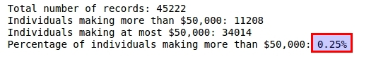
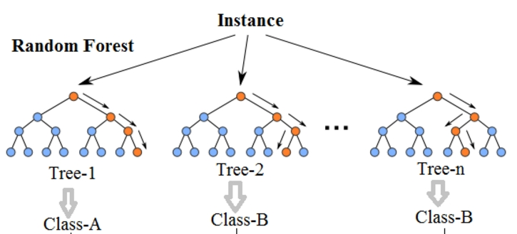

Your project could not be reviewed. Please resubmit after you address the issue noted by the reviewer.
The report is in machine-learning/projects/finding_donors/report.html


Dear Student,
Congratulations on your submission!. Overall, good work on those parts of the project you completed. You'll find some sections are marked as not meeting specifications, just minor fixes are required and won't take you much to implement. I hope you find my argumentation reasonable and clear and helps you to continue your work on such sections. However, if you still have questions/comments, please don't hesitate to reach us, we'll be glad to help you.
Keep up your good work!
Student's implementation correctly calculates the following:
All of the important characteristics of the dataset are correctly provided except for the Percentage of individuals making more than $50,000. While it might seem a bit trivial the Percentage of individuals making more than $50,000 is off by two decimal places. Make sure that to multiply by 100 when converting between decimals to percents to give the correct number.

Student correctly implements one-hot encoding for the feature and income data.
Excellent implementation of one-hot encoding.
Student correctly calculates the benchmark score of the naive predictor for both accuracy and F1 scores.
Well done getting the right expression for the F-score and recognizing accuracy and prediction, in this case, are the same.
The pros and cons or application for each model is provided with reasonable justification why each model was chosen to be explored.
Please list all the references you use while listing out your pros and cons.
Great discussion of the pros and cons for the different algorithms attempted, as well as their main applications and reasons to use them in this problem.
As a summary:
As a side comment, you choose a great stack of models to attack your problem!. In my opinion, GaussianNB is always a good choice since it doesn't require tuning and can reach decent results even if features are not fully independent, it could be your benchmark to explore further algorithms. Decision Trees are also a good choice since they provide feature importances which can help you to understand the predictive power associated with each feature and also an intuitive visualization of the decision criteria. Another right choice would be Logistic regression since there are just two classes, this classifier is quite robust and also provides probability estimates so you can understand the model confidence when labeling a student with a particular class. For more accurate results, but computationally more expensive, ensemble models are the right choice, even you can consider a Vooting Classifier to combine the output of several classifiers!. As you can see, there are plenty of options!, it is a matter of the dataset characteristics and your main goals to achieve to select the right algorithms.
Student successfully implements a pipeline in code that will train and predict on the supervised learning algorithm given.
Excellent implementation of the pipeline to train and validate the different classifiers attempted.
Student correctly implements three supervised learning models and produces a performance visualization.
Well done testing the different classifiers attempted for different training sizes.
Justification is provided for which model appears to be the best to use given computational cost, model performance, and the characteristics of the data.
Nice work using your results, in terms of performance and computational cost, to justify the final choice.
As a suggestion, consider a confusion matrix for more detailed information about classifier performance.
from sklearn.metrics import confusion_matrix
import seaborn as sns
import matplotlib.pyplot as plt
%matplotlib inline
# Compute confusion matrix for a model
model = clf_C
cm = confusion_matrix(y_test.values, model.predict(X_test))
# view with a heatmap
sns.heatmap(cm, annot=True, cmap='Blues', xticklabels=['no', 'yes'], yticklabels=['no', 'yes'])
plt.ylabel('True label')
plt.xlabel('Predicted label')
plt.title('Confusion matrix for:\n{}'.format(model.__class__.__name__));
Also, learning curves are a great tool to understand whether your models are overfitted or not and how the learning occurs while increasing the train size:
Student is able to clearly and concisely describe how the optimal model works in layman's terms to someone who is not familiar with machine learning nor has a technical background.
Although how Random Forest works are well described, well done!. However, some more details are required to better understand how learning process happens during the training phase or how a new person is categorized based on his dataset characteristics and the previously learned information.
So, your response should address:
Also, as a suggestion to avoid using concepts like "features", "classes", etc. A non-technical audience might have heard these words before, but they won't know what they mean in a machine learning context. A great way to get around that is to use concrete examples from the data set. So instead of mentioning "classes", I would say "makes more or less than $50,000". Instead of saying "features", I would talk about "education_level,occupation, relationship", etc.
As a recommendation, have a look at this blog where it is provided a layman explanation of how RF works. Using examples to explain technical concepts is a wise option to explain algorithms since the audience is familiar with such context (it is even better if you use this current example!). Note you can also include visualizations and use such visualizations to explain how the algorithm works:

For example, how would you explain this visualization to your audience in this particular context?... translating this image to the current context is the way to allow your agnostic audience understand how the classifier works.
The final model chosen is correctly tuned using grid search with at least one parameter using at least three settings. If the model does not need any parameter tuning it is explicitly stated with reasonable justification.
Well done tuning your algorithm with SearchGridCV and obtaining the best estimator from it. As a suggestion, using the cv parameter you can pass a cross-validation object to validate your search results that best adapt to your dataset characteristics (unbalanced and small).
For example:
# Set up cross validator (will be used for tuning all classifiers)
from sklearn import cross_validation
cv = cross_validation.StratifiedShuffleSplit(labels, 100, random_state = 42)
a_grid_search = GridSearchCV(clf, param_grid = clf_params,cv = cv, scoring = 'recall')
For your reference, note you can also visualize your grid results.
Student reports the accuracy and F1 score of the optimized, unoptimized, and benchmark models correctly in the table provided. Student compares the final model results to previous results obtained.
Good discussion of the performances obtained along the whole process.
Student ranks five features which they believe to be the most relevant for predicting an individual's’ income. Discussion is provided for why these features were chosen.
Well done summarizing those features that intuitively seem important (great analysis!!  . However, would you mind to include a short discussion with the main conclusions from your analysis?, for example why age is selected?, what about hours-per-week? etc.
. However, would you mind to include a short discussion with the main conclusions from your analysis?, for example why age is selected?, what about hours-per-week? etc.
Student correctly implements a supervised learning model that makes use of the feature_importances_ attribute. Additionally, student discusses the differences or similarities between the features they considered relevant and the reported relevant features.
Well done getting the feature importances and good intuition, you were mostly right. 
Student analyzes the final model's performance when only the top 5 features are used and compares this performance to the optimized model from Question 5.
Good analysis. Note feature selection process is key in Machine Learning problems, the idea behind it is that you want to have the minimum number of features than capture trends and patterns in your data. A good feature set contains features that are highly correlated with the class, yet uncorrelated with each other. Your machine learning algorithm is just going to be as good as the features you put into it. For that reason, this is definitely a critical step into any ML problem. In this case, there are not significant differences in terms of performance, but in terms of computational costs and interpretability, there is a significant gain!.
Ben shares 5 helpful tips to get you through revising and resubmitting your project.
Watch Video (3:01)